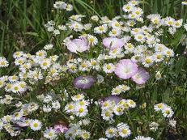

Hi, everyone,
Mark and I hope that you have been well and enjoyed 2021, and we wish you the best for the coming year.
This year has been busy with work, but we have continued to work from home, including teaching, working with our advisees, and going to meetings. We both participated in (many) more conferences than usual this year, taking advantage of the much greater access to talks with conferences being available online. Three of Mark's doctoral advisees (Jesse, Robert, and Vincent) finished their degrees and moved to new jobs this year, making a substantial change for Mark, too. I also had a sizable change at work; my last year as Graduate Chair ended in August, after 10 years (minus 2 sabbatical years). I miss some parts of that work, but it has also been interesting to concentrate more on other aspects of my job.
Our dining room table was converted into my work desk in 2020, and I frequently have interesting visitors outside on the deck a few feet from my chair. A family of foxes - including a very adorable kit (the fox with the white tail tip) who loved to play and roughhouse - spent a lot of time in our backyard and occasionally on the deck. Our (heated) bird baths are very popular in the winter time, too. Each day the sparrows apparently agree on a common bath time, and then try to find out how many sparrows can squeeze into a bird bath simultaneously. After that, they fling water around with abandon, emptying the bird baths quite quickly.
Although we did not travel this year because of the pandemic, we visited some local parks more frequently this year. I decided to use the opportunity to enjoy - and learn the names of - many of the local wildflowers, and Mark took wonderful photos of many of them. Butterflies, moths, and bees frequently took part in the photos, too! At one particular park about 10 miles south of our home we returned quite often, watching the flowers in the fields and roadsides changing through the seasons, and the beauty we saw while walking the gravel roads in and near the park was astounding. Here is a selection of a few favorites from the year:
|
|
|  |
For those of you who may be curious about what is in these nature photos: In the first row left-to-right are a prairie wild rose, partridge pea, and whorled milkweed with a monarch butterfly. The second row has a trumpet creeper, a purple coneflower with a pearl crescent butterfly, and a tall goldenrod with a viceroy. In the last row are hoary vervain with a silver-spotted skipper, daisy fleabane and field bindweed, and blue sage with a white-lined sphinx moth. The sphinx moth was particularly surprising to us: it is a moth, but it flies and drinks nectar from flowers remarkably like a hummingbird.
In April a very neat part of the spring bird migration happened right over our front yard: A flock of cedar waxwings spent several days eating flowers from our neighbor's tree that overhangs our driveway. We wondered very much what our neighbors thought of our watching and photographing the tree for so long each day, but we also wondered at them for not looking up in the tree themselves and watching the show! In November we went to Loess Bluffs NWR to see more of the migration; in the picture below/right are trumpeter swans, white-fronted geese, and mallards.
We continue to miss friends and family especially while not traveling because of the pandemic, but we've appreciated being able to keep in contact through Zoom, email, etc. Happy holidays and new year to all of you! Mark and I wish you the best for 2022.
Susan